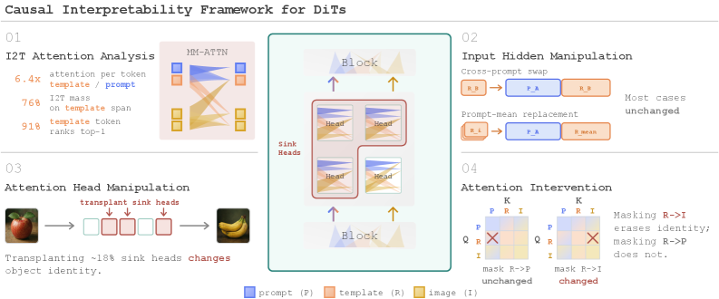
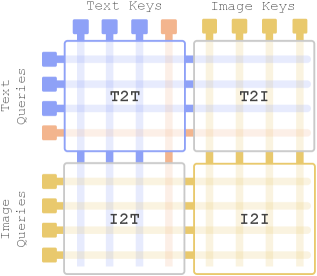

现代文生图系统已从U-Net + 交叉注意力转向 DiT（Diffusion Transformer），文本和图像token通过联合注意力交互。同时，文本侧也发生了变化：用户提示不再仅通过CLIP或T5编码，还可能使用LLM隐藏状态。用户提示先序列化为包含system、user、assistant、分隔符等结构性token的聊天模板，这些隐藏状态再传给扩散transformer。
这些结构性token通常被视为必要的格式填充物：但本文通过因果可解释性框架发现了一个反直觉的结论：结构性token在编码器输出时几乎没有携带提示语义信息，但在DiT内部却意外地成为主要的图像-文本注意力汇聚点（attention sink），因果性地维持着物体的身份，充当隐式语义寄存器。
本文引入了一个用于现代大规模DiT的因果可解释性框架，结合了注意力分解（attention decomposition）和跨token、head、层级的定向干预（targeted intervention）。
框架将提示内容token与结构性模板token分离，通过干预实验测量每个token/head对生成结果的因果贡献。这样就能回答：结构性token在DiT中究竟扮演什么角色？
发现1：结构性token不携带提示信息。 在编码器输出端，结构性token与提示内容几乎没有语义重叠。它们只是LLM聊天模板的格式残余。
发现2：结构性token是主要的attention sink。 在DiT的联合注意力层中，图像token对结构性token的注意力权重极高，远高于对提示内容的token。结构性token吸收了不相称的注意力。
发现3：结构性token因果性地维持物体身份。 通过干预实验（遮蔽/替换结构性token），作者发现它们对生成结果中物体身份的保持有显著的因果作用。去掉它们，物体身份会丢失或混淆。
发现4：语义通过间接路径注入。 提示语义并非直接从prompt token转移到结构性token：而是先注入到图像隐变量，再通过图像token对结构性token的注意力回读回去。

基于上述发现，作者设计了一种训练无关的DiT注意力head剪枝规则：
对prompt token注意力最强的head是可删除的。 这些head主要关注提示内容，但结构性token已经在充当语义寄存器：删除这些head不会显著影响生成质量。
实验表明：剪掉20% 的注意力FLOPs，GenEval仅下降1.4分。 无需再训练，直接推理时跳过这些head即可。这是一个实用的推理加速方案。
通过因果分析，作者揭示DiT的生成计算在深度上如何组织：
第一阶段：身份形成（Identity Formation）： 浅层中，图像token从结构性token读取物体身份信息。这一阶段确立了生成内容的基本身份。
第二阶段：传播（Propagation）： 中层中，身份信息在图像token之间传播和细化。注意力head协同工作，将身份特征分配到空间位置。
第三阶段：精炼（Refinement）： 深层中，视觉细节被精炼和增强。语义路由（由结构性token主导）与视觉合成（由图像token内部注意力主导）在此分离。
这一发现揭示了DiT中的一个重要设计原理：编码语义的token不必是生成过程中维持语义的那些token。 结构性token虽然在输入时是'空'的，但在生成过程中被赋予了关键的语义寄存器功能。
这一发现也为理解更大的模型提供了思路：随着DiT规模增大，结构性token的角色可能变得更加重要，因为它们为跨层的信息流提供了一个稳定的语义锚点。

参考：https://arxiv.org/abs/2607.19139